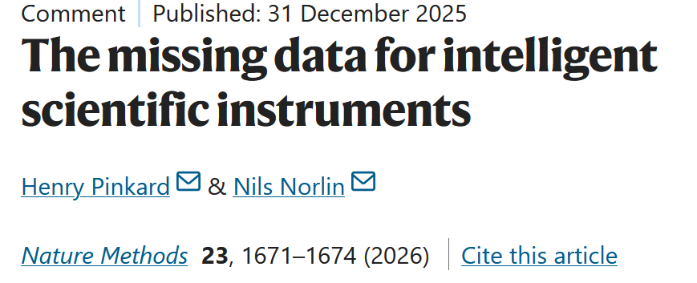

Expertise that leaves with the operator: the case for recording instrument workflows

A Nature Methods Comment by Henry Pinkard and Nils Norlin argues that the commands, responses and metadata passing through instrument control software are training data for AI systems that could operate instruments at expert level, and describes what would be required to record them at scale.
Henry Pinkard (UC Berkeley and Lund University) and Nils Norlin (Lund University) have published a Comment in Nature Methods on the experimental data that instrument software produces and then discards. The article, “The missing data for intelligent scientific instruments”, appears in the September 2026 issue and belongs to the journal’s Focus on AI in biological research.
Every acquisition session generates a sequence of commands, instrument responses and metadata: a focus offset, an exposure change, an image, a state change returned by the controller. The authors argue that these sequences contain the operator’s decision-making in a form that is already digital, and that most instruments store only the final results, while the workflows that produced them are lost. A methods section compresses the same work into a summary, and the skills involved in recognizing that an intervention is needed, tuning parameters and adapting a protocol during acquisition are not represented there.
Current smart microscopy implementations rely on hard-coded rules or are written for one specific situation. Even though they already operate at speeds and scales beyond human capability, they have limited capacity to plan an experiment or to diagnose a failed acquisition. Workflow data is what a model would need in order to learn those capabilities.
The Comment lists five open challenges, one of which is software: most instruments were never designed for workflow capture. Here the authors highlight ExEngine, an ongoing project that introduces a Python layer between device backends such as Micro-Manager and whatever drives them, whether a graphical interface, a script or an automated agent. A wrapper of this kind could record the exchange at the point where it passes, without a rewrite of existing infrastructure.
The authors recommend that the community begin recording workflow data now. Whichever AI architecture proves best, data quality is likely to remain the limit on what these systems can do.